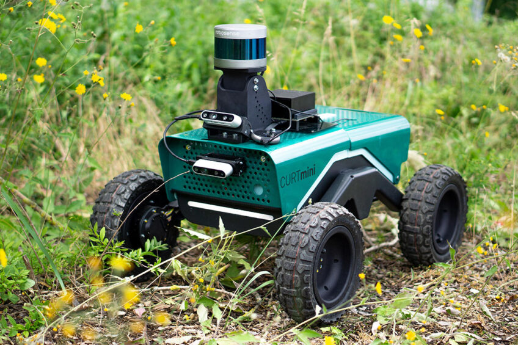
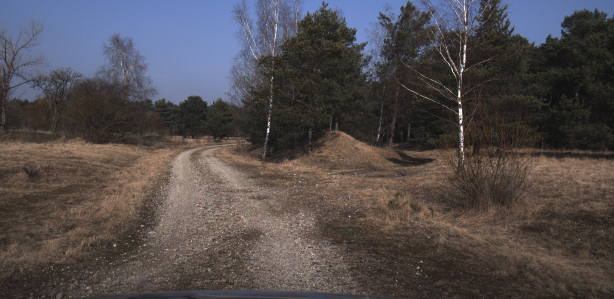
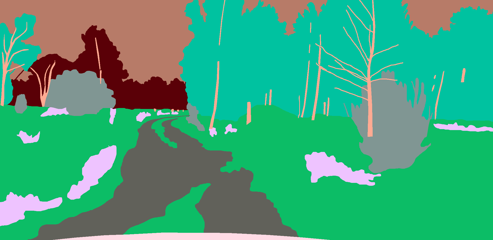
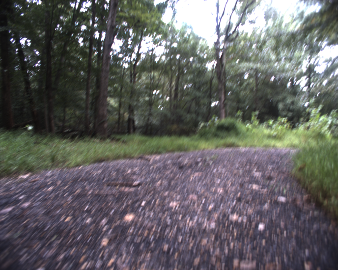
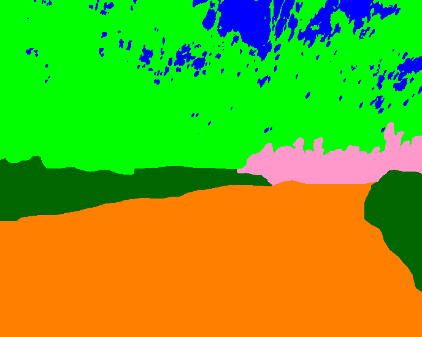

A segmentation model which constantly adapts to new environments
Outdoor robots operate in environments that keep changing. Seasons change the appearance of vegetation, sites introduce terrain the robot has never driven on, and sooner or later something appears in front of the camera that was not in any training set.
The standard answer is to retrain from scratch on the pooled data. The earlier data may no longer be available, labelling is expensive, and the compute budget is a single embedded module. Fine-tuning on the new data alone is cheap, but it overwrites the old task(catastrophic forgetting) and accuracy on previously learnt classes collapses.
CurtMini as the development platform, CurTrac as the transfer target
CurtMini is the smallest robot in the CURT family developed at Fraunhofer IPA. It is sold as an open research platform and is built to recognise different ground types, judge how traversable they are, and plan a route accordingly.

assets/curtmini.jpg Photo of CurtMini on terrainA frozen foundation encoder and a light decoder
Pretrained frozen DinoV3 provides visual features that generalise across scenes and seasons, and not need relearn at every step. An all-MLP head over multi-scale features (trainable)
Because the encoder stays largely fixed, drift is concentrated in the decoder, where it can be controlled by using prototype replay methods.
What the method has to deliver
- Less forgetting. IoU on earlier classes stays close to its value at the step where those classes were learned.
- Real transfer. Later steps benefit from earlier ones instead of merely tolerating them.
- An honest unknown. Pixels that belong to nothing in the current label set are flagged rather than forced into the nearest class(open-world recognition).
- A fixed footprint. Limited number of prototype per class, no images stored in memory.
Datasets
Off-road segmentation is harder: terrain classes have no crisp boundaries, a handful of classes such as vegetation, terrain and sky occupy most of the pixels(long tailed distribution), and the safety-relevant classes are the rare ones.
| Dataset | Annotated frames | Classes | Character |
|---|---|---|---|
| GOOSE | 10,000 RGB + LiDAR pairs | 64 fine classes | German outdoor and off-road scenes; fine-grained taxonomy that also rolls up into coarse super-categories |
| RUGD | ~7,400 frames, 18 sequences | 24 classes | Small ground robot traversing trails, creeks, parks and villages; irregular boundaries and motion blur |

assets/goose-rgb.jpgGOOSE RGB frame
assets/goose-label.pngMatching semantic annotation
assets/rugd-rgb.pngRUGD RGB frame
assets/rugd-label.pngMatching semantic annotationAblations across three kinds of incremental setting
| Setting | What changes between steps | Reported |
|---|---|---|
| Domain-incremental | Same classes, new environment, season or platform | mIoU per domain after each step; backward transfer |
| Class-incremental | New classes added to the existing label set | Old-class vs. new-class IoU; forgetting measure |
| Open-set / open-world | Objects outside the label set appear at inference | Unknown-region quality; accuracy after adopting a discovered class |
Ablated components
- Encoder choice and whether it is frozen. Isolates how much of the robustness comes from pretrained features rather than from the continual learning mechanism.
- Distillation, memory and constrained updates. Each removed in turn to attribute the retained IoU to a specific component.
- Step ordering and step size. Tests whether the result depends on a favourable curriculum.
- On-device cost. Latency, peak memory and update time measured on the Jetson AGX Orin.